Items, artifacts, and weapons
|
|
|
|
Weapons
At first, you only have your pistol and your fists for protection. When you run over a new weapon, you'll automatically equip yourself with it. As the game progresses, you'll need to choose between firearms. The numeric keys select particular weapons, the same as the other classes.
Doom's weapons are:
| 1 | Fist
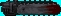 Chain saw |
The Chain saw cuts down baddies like standing timber, but you have to get close. |
| 2 |
|
Your stand military issue sidearm. I will always be with you, so don't forget about it when things get tough. |
| 3 | 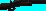
Shotgun 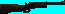 Combat Shotgun |
Shotguns deliver a heavy punch at
close range and a generous pelting from a distance.
Combat Shotguns are double-barreled, sawed-off killing sticks. These gats are the ultimate in pellet warfare. Beware, two barrels not only deliver more firepower, but take more time to reload. |
| 4 | 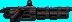
Chain gun |
The Chain gun directs heavy firepower into your opponent, making him do the chain gun cha-cha. |
| 5 | 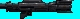
Rocket Launcher |
The Rocket Launcher delivers an explosive rocket that can turn several bad dudes inside-out... Be careful with this one. Firing in close proximity at an object or enemy is bad for your health. |
| 6 |
Plasma Rifle |
Plasma Rifles shoot multiple rounds of plasma energy... frying some Demon butt! |
| 7 | 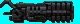
BFG 9000 |
BFG9000's are the prize of the military's arsenal. Great for clearing the room of those unwelcome guests. Shoot it and see for yourself. |
8 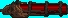
Very little is know about this weapon. It is said to
be nothing more than a mere laser
Unmaker
cannon, but what could
it's true purpose be?
HEALTH AND ARMOR
Even for a tough hombre like you, the levels can be deadly places. Whenever you are injured, the screen will flash red, and your health will decrease. Keep an eye on your health, or you'll end up face-down.
HEALING:
When you're hurt, you'll want to get healed as soon as possible. Fortunately,
you'll find an abundant supply of Medikits and Stimpacks littering the
levels. Grab them to boost your health
| STIMPACKS: These give you a quick injection of booster enzymes that make you feel like a new man--at least, to a degree. | 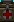 |
| MEDIKITS: These are even better, and include bandages, antitoxins, and other medical supplies to make you feel a lot healthier. | 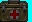 |
ARMOR:
Two types of body armor can be found laying around. Both reduce damage
done to you. Unfortunately, both deteriorate with use, and are eventually
destroyed by enemy attacks, leaving you in need of replacement armor.
| GREEN SECURITY ARMOR is a lightweight kevlar vest that's perfect for riot control. | 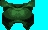 |
| BLUE COMBAT ARMOR is a heavy duty jacket composed of a titanium derivative--useful for protection against real firepower, like the kind you're gonna face. |
If you're wearing armor, you'll only pick up a replacement suit if it provides more protection than what you're currently wearing.
POWERUPS
Other bits of "challenging electronics" may be found within the game. Most of these are pretty handy, so grab them when you can. These special items have a duration of either the entire level, a specific amount of time, or just provide an instant benefit. A few of them affect your game screen so you can tell when they're active.
For example, when you pick up a radiation
suit, the game screen turns green. It returns to normal once the effect
wears off. This is a hint to get out of the radioasctive ooze as quickly
as possible!
| RADIATION SUITS provide
protection against radioactivity, heat and other low-intensity forms of
energy. Basically, these artifacts enable you to wade through the radioactive
ooze without taking damage.
While it's operating, your screen will have a greenish tint. Quickly do what you have to dow ithin the radiation... this effect will evenually stop. [Time Based] |
| BERSERK PACKAGES
heal you, plus act as a super-adrenaline rush, enormously boosting your
muscle power. Since you're already a pretty meaty dude, this mega strength
lets you punch those Demons into oblivion.
When you become Berserk, your screen will briefly turn red. Your increased punching pwoer will last through the entire level. [Duration: One Level/Until Death] |
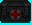 |
| BACKPACKS increase the amount of ammo you can carry. In addition, whenever you find a backpack, you receive extra ammunition[Duriation: Until you die]. |
COMPUTER MAPS
are a handy find. Will update you automap with a complete
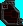
map of the entire level
Areas you haven't been to are mapped in grey
NIGHTVISION GOGGLES
increase your vision to see clearly even in pitch black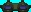
Artifacts
Objects from other dimensions are now lying around,
you may want them!
| HEALTH POTIONS provide a small boost to your health--even past your normal 100%! |
| SPIRITUAL ARMOR provides a little extra protection above and beyond your normal armor. |
| SOUL SPHERES are rarely encountered objects that provide a large boost to your health. A close encounter with one of these and you'll feel healthier than ever! Note that, unlike both Quake classes, the Doom Marine's health does not rot when it exceeds 100%. |
| MEGA SPHERES combine the power of Combat Armor with the benefits of a Soul Sphere. | 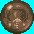 |
| BLUR ARTIFACTS are strange orbs that render you mostly invisible, making it difficult for others to spot you. The enemy can still see you, but most of the time, they'll see you all too late. [Time Based] | 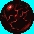 |
| INVULNERABILITY ARTIFACTS render you immune to all damage. Pretty cool, until the effect wears off. When you're invulnerable your screen will be whiter--your punishment for being tough. [Time Based] |
Monsters and Demons - Some call them Monsters, some call them Demons, whatever they are, they aren't of this world and are waiting for you...
| Zombieman - One a Marine, always a Marine. except in this case. These guys may look like your old buddies, but now they're nothing more than pistol-toting, bi-pedal maggots. Waste 'em! | 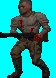 |
| Shotgun Guy - Ditto. Except these guys are meaner and tougher. These walking shotguns will preovide you with a few extra holes if you're not careful. | 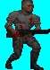 |
| Imp - You thought an imp was a cute little dude in a red suit with a pitchfork. Think again. This Imp heaves balls of fire down your throat and takes several bullets to die. It's time of find a better weapons than the pistol, if you're going to face more than one of these mutants. | 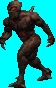 |
| Nightmare Imp - An Imp was bad enough, but picture a faster, more aggressive one. Now the badnew.. he's harder to see, too. | 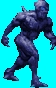 |
| Bull Demon - Sorta like shaved gorillas, except with horns, big heads, and a mouth full of razor blades. They don't kill easy. Get too close and they'll rip your sorry head off. | 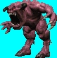 |
| Spectre - Great! just what you needed. An invisible (nearly) monster. These beasts will eat your face off. Did you expect a walk in the park? |
| Lost Soul - Tough, dumb, flies, on fire, 'nuff said. | 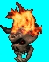 |
| Cacodemon - They float in the air, Belch ball-lightning, and have one horrendously big mouth. If you get too close to one of these monstrosities, you're toast. | 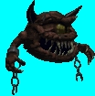 |
| Pain Elemental - What a name. And what a pain in the butt. Killing him is almost as bad as letting him live. | 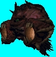 |
| Hell Knight - Tough as a dump truck and nearly as big. These goliaths are the worst thing on two legs since the Tyrannosaurus Rex. | 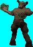 |
| Baron of Hell - You thought the Hell Knights were bad? These guys make them look like choir boys. You better have a good supply of ammo and armor to take on this demon. | 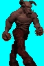 |
| Mancubus - The only good thing about this fat tub of Demon is that he's a nice wide target. Good thing, because it takes a lot of hits to punture him. He pumps out fireballs like nobody's business. | 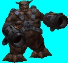 |
| Arachnotron - Think of the pain a Black Widow causes when you disturb her nest. Then think what happens when you stir up one the size of an M60 tank. | 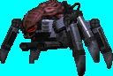 |
| Nightmare Spectre - If you "liked" the Spectre, meet his tougher brother. | 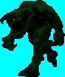 |
| Nightmare Cacodemon - Just when things couldn't get any worse, this guy comes along.A red, berserking mad Cacodemon that wants fried marine for lunch. Too bad you won't (barely) see him until the last minute... | 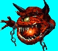 |
| Cyberdemon - Half
unfeeling machine, half raging horned devil. He also doesn't like you.
This walking nightmare has a Rocket Launcher for an arm and will definately reach out and touch you. Make sure you're fully loaded before you take on this guy. |
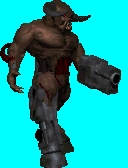 |
| ??? - The single Demon entity that, with it's vast rejuvenation powers, brought these Nightmares back to life. She obvious isn't friendly... | 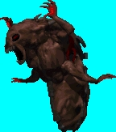 |